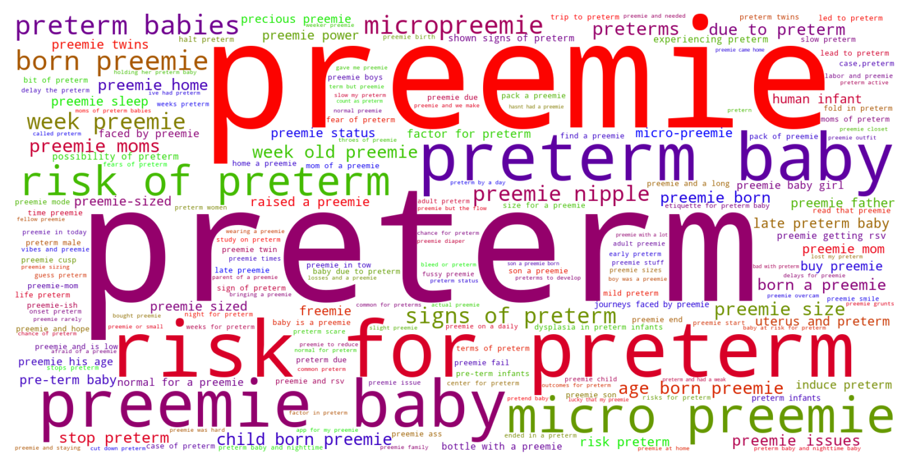

Jump to section:
Samples from Social CorpusHits per UMLS Alias on Social Corpus
Word Cloud Comparison
Embedding Space Comparison
Nearest Neighbors by Semantic Type
Related Analysed Concepts
Samples from Social Corpus
** Trigger warning , I suppose :** mentions of bleeding during sex , feelings of sadness , anxiety , and panic about preterm labor and bedrest .
Confidence: 0.607. Reddit link
He was a micropreemie born at 27 weeks ( not sure if this is part of the issue ?) and was always a champion sleeper .
Confidence: 0.550. Reddit link
I've had several miscarriages and a preterm delivery that resulted in loss .
Confidence: 1.000. Reddit link
She then told me that it IS a boy because of how low I'm carrying ' him ' followed by , ' you 'll probably have a preemie baby , there's no way that you're going to make it full term with you being so big ' .
Confidence: 0.764. Reddit link
I've been diligently watching for signs of either since , as even a little old UTI can throw you into preterm labor .
Confidence: 0.564. Reddit link
The pediatrician and nurse have told us very nonchalantly , " it's just the preemie grunts " , with no real explanation other than its likely due to immaturity .
Confidence: 0.707. Reddit link
Before every feeding for 24 hours they have to prick her heel to check her blood sugar since she is preterm ( poor baby ) .
Confidence: 0.552. Reddit link
This started as soon as I stopped breastfeeding , when my daughter was a month old ( she was a preemie and had trouble nursing ) .
Confidence: 0.607. Reddit link
My first child had a short NICU stay ( 9 days ) because of apnea and bradycardia , but he wasn't a preemie and took all feedings by mouth .
Confidence: 0.529. Reddit link
Well 3 am Monday morning we ended up going into ( and stopping ) preterm labor .
Confidence: 1.000. Reddit link
Hits per UMLS Alias on Social Corpus
-
preterm baby
45 hits
-
preterm infants
3 hits
-
preterm infant human
2 hits
-
preterm infant
0 hits
-
premature infants
0 hits
-
premature infant
0 hits
-
infants premature
0 hits
-
premature infant human
0 hits
-
infant preterm
0 hits
-
infant premature
0 hits
-
infants preterm
0 hits
Word Cloud Comparison
Keywords matching C4048294
Keywords matched against concept. Word size represents frequency.
Keywords co-occurring with C4048294
Co-occurrence is measured at the document-level (i.e. Reddit submissions). Frequencies are normalized to account for keywords common to all CUIs.
Embedding Space Comparison
T-SNE comparison for word embeddings learned from medical domain (EuroPMC) and social media (Reddit) independently.
Pearson correlation for union of closest 1000 neighbors: -0.043
Nearest Neighbors by Semantic Type
Most similar concepts in each of the selected UMLS semantic types. Based on concept embeddings from social corpus.
T100 (Age Group)
-
C4048294
Preterm baby
1.000 Similarity
-
C4551581
Full term baby
0.807 Similarity
-
C3494262
Extremely preterm infant
0.788 Similarity
-
C0021270
Baby
0.683 Similarity
-
C0021289
Newborn
0.652 Similarity
-
C1708505
Infant toddler
0.614 Similarity
-
C1444711
Preteen
0.525 Similarity
-
C0814589
Toddler stage
0.514 Similarity
T079 (Temporal Concept)
-
C2964377
Preterm time
0.858 Similarity
-
C0231330
Infancy
0.607 Similarity
-
C0443303
Short term
0.601 Similarity
-
C0443252
Long term
0.588 Similarity
-
C0022872
Second stage labour
0.578 Similarity
-
C0814007
Pregnancy stage
0.567 Similarity
-
C1279941
Late stage
0.559 Similarity
-
C0178795
Perinatal
0.555 Similarity
T046 (Pathologic Function)
-
C0151526
Pre term
0.762 Similarity
-
C0022876
Early labor
0.747 Similarity
-
C0473390
Threatened preterm labor
0.662 Similarity
-
C0032993
Post dates
0.634 Similarity
-
C0729264
Preterm premature rupture membrane
0.633 Similarity
-
C0085598
False labor
0.619 Similarity
-
C0015927
Iud
0.616 Similarity
-
C0015944
Pregnancy prom
0.616 Similarity
T184 (Sign or Symptom)
-
C2735340
Preterm labor symptoms
0.718 Similarity
-
C0024031
Lower back pain
0.592 Similarity
-
C0231809
Dyspnea leaning over
0.586 Similarity
-
C0237326
Dyschezia
0.570 Similarity
-
C0231217
Multiple complaints
0.565 Similarity
-
C0565619
Fetal distress labor
0.560 Similarity
-
C3494358
Prodromal sign
0.555 Similarity
-
C0151104
Pain when lying hip
0.554 Similarity
T047 (Disease or Syndrome)
-
C0231341
Aging premature
0.681 Similarity
-
C0033036
Atrial premature contractions
0.666 Similarity
-
C0021345
Mono
0.613 Similarity
-
C0340464
Extrasystoles
0.610 Similarity
-
C0015934
Intrauterine growth restriction
0.607 Similarity
-
C0038644
Sids
0.600 Similarity
-
C0205721
Hospital infection
0.594 Similarity
-
C0162296
Joints multiple pain
0.586 Similarity
T074 (Medical Device)
-
C3878817
Bib infant child
0.648 Similarity
-
C0179275
Infant bed
0.599 Similarity
-
C1314747
Bottle nursing
0.548 Similarity
-
C0593622
Home pregnancy test
0.529 Similarity
-
C0179850
Birthing chair
0.513 Similarity
-
C3179499
Sling male
0.512 Similarity
-
C0812894
Enteral feeding supplies
0.511 Similarity
-
C0085104
System
0.503 Similarity
T037 (Injury or Poisoning)
-
C0417108
Jump from burning hospital
0.620 Similarity
-
C0686721
Baby shaken
0.620 Similarity
-
C0417045
Fall from hospital gurney
0.598 Similarity
-
C0005604
Traumatic birth
0.561 Similarity
-
C3544104
Exposure during pregnancy
0.559 Similarity
-
C0730592
Vulval tear during delivery
0.537 Similarity
-
C0269858
Traumatic lesion during delivery
0.536 Similarity
-
C0160073
Other hand sprain
0.528 Similarity
T049 (Cell or Molecular Dysfunction)
-
C4725191
Stop lost
0.614 Similarity
-
C0544885
Stop gain
0.548 Similarity
-
C1705285
Mutated
0.483 Similarity
-
C0002938
Aneuploidy
0.480 Similarity
-
C0041107
Trisomy
0.432 Similarity
-
C0040715
Translocation
0.426 Similarity
-
C0008625
Chromosomal abnormality
0.423 Similarity
-
C0008628
Del
0.421 Similarity
T190 (Anatomical Abnormality)
-
C3887590
Stricture ureter
0.602 Similarity
-
C4732742
Hole center heart
0.556 Similarity
-
C1265602
Multiple masses
0.525 Similarity
-
C0269852
Previa vasa
0.498 Similarity
-
C0269185
Tipped uterus
0.477 Similarity
-
C0266785
Umbilical cord issue
0.474 Similarity
-
C0332482
Distortion
0.472 Similarity
-
C4021111
Short little toe
0.472 Similarity
T023 (Body Part, Organ, or Organ Component)
-
C0007776
Grey matter
0.593 Similarity
-
C1268107
Lung part
0.544 Similarity
-
C0042149
Uterus
0.544 Similarity
-
C1514389
Pregnant uterus
0.528 Similarity
-
C1268123
Liver part
0.527 Similarity
-
C0013303
Duodenum
0.522 Similarity
-
C3687237
Wing part
0.521 Similarity
-
C0929057
Vomer proper
0.519 Similarity
T032 (Organism Attribute)
-
C0017504
Gestational age
0.591 Similarity
-
C0005612
Weight baby
0.567 Similarity
-
C0518035
Children growth
0.544 Similarity
-
C0751992
Fetal weight
0.530 Similarity
-
C1954788
Gestational age weeks
0.516 Similarity
-
C0001779
Age
0.507 Similarity
-
C0805393
Breathing spontaneous
0.501 Similarity
-
C0005890
Stature
0.495 Similarity
T061 (Therapeutic or Preventive Procedure)
-
C0404370
Delivery after coming head
0.585 Similarity
-
C1627881
Taking oral swab
0.568 Similarity
-
C0420528
Night hospital care
0.567 Similarity
-
C0018504
Removing hair
0.565 Similarity
-
C1276380
Advice about taking aspirin
0.564 Similarity
-
C0011209
Delivery
0.564 Similarity
-
C2317425
Bathing infant
0.558 Similarity
-
C0033045
Pre meds
0.557 Similarity
T201 (Clinical Attribute)
-
C0566679
Length labor
0.585 Similarity
-
C1275644
Reading add
0.541 Similarity
-
C0012655
Predisposition
0.539 Similarity
-
C1286282
Birth outcomes
0.533 Similarity
-
C3828490
Pregnant during study
0.524 Similarity
-
C1705488
Ftm
0.518 Similarity
-
C1286057
Completeness placenta
0.517 Similarity
-
C1301668
Delivery time
0.514 Similarity
T101 (Patient or Disabled Group)
-
C0008098
Child hospitalized
0.576 Similarity
-
C0233363
Monoamniotic twins
0.566 Similarity
-
C0871503
Dying patients
0.544 Similarity
-
C0260101
Sick child
0.530 Similarity
-
C0259916
Disabled child
0.521 Similarity
-
C0175950
Problem children
0.494 Similarity
-
C0683995
Drug exposed child
0.491 Similarity
-
C0018576
Disabled
0.481 Similarity
T067 (Phenomenon or Process)
-
C0023983
Long term effects
0.573 Similarity
-
C0337240
Fall while being carried
0.562 Similarity
-
C2986841
Binding potential
0.533 Similarity
-
C0023670
Events life change
0.491 Similarity
-
C0870455
Early childhood development
0.462 Similarity
-
C0337226
Fall home
0.446 Similarity
-
C0677038
Increase pressure
0.437 Similarity
-
C0034897
Recurring
0.435 Similarity
T060 (Diagnostic Procedure)
-
C0040862
Labor trial
0.569 Similarity
-
C0033053
Prenatal diagnoses
0.561 Similarity
-
C2599434
Newborn hearing screen
0.554 Similarity
-
C0007208
Cardiotocography
0.542 Similarity
-
C1578855
Monitoring labor
0.531 Similarity
-
C0032976
Pregnancy test
0.526 Similarity
-
C0034606
Scan
0.525 Similarity
-
C0195324
Cone biopsy
0.525 Similarity
T005 (Virus)
-
C5058350
Fairfax lookout virus
0.569 Similarity
-
C4433204
King virus
0.556 Similarity
-
C3949524
Mischivirus
0.553 Similarity
-
C1220459
Hart park group
0.553 Similarity
-
C3743464
Mycobacteriophage whirlwind
0.542 Similarity
-
C0205939
Cold virus common
0.537 Similarity
-
C3768023
Mycobacteriophage conspiracy
0.534 Similarity
-
C5116712
Bjornvirus
0.506 Similarity
T007 (Bacterium)
-
C0995648
Genus quinella
0.552 Similarity
-
C0018154
Gram positive bacteria
0.501 Similarity
-
C0579233
Group b strep
0.457 Similarity
-
C0597134
Flora oral
0.442 Similarity
-
C0036111
Salmonella
0.420 Similarity
-
C0023859
Listeria
0.420 Similarity
-
C1016530
Hallella
0.413 Similarity
-
C1015849
Wigglesworthia
0.411 Similarity
T059 (Laboratory Procedure)
-
C1295143
Fetal fibronectin test
0.551 Similarity
-
C0545131
Cbc diff
0.549 Similarity
-
C0023901
Liver tests
0.541 Similarity
-
C0200896
Cytogenetic studies
0.523 Similarity
-
C0430065
Standard pregnancy test
0.519 Similarity
-
C0037793
Specimen treatment
0.502 Similarity
-
C0368930
Clotting time
0.500 Similarity
-
C0430400
Culture general
0.500 Similarity
T048 (Mental or Behavioral Dysfunction)
-
C0338927
Hospitalism
0.550 Similarity
-
C0009946
Hysteria
0.544 Similarity
-
C0003537
Losing words
0.538 Similarity
-
C0036857
Severe mental handicap
0.534 Similarity
-
C0522187
Fear childbirth
0.530 Similarity
-
C0270327
Bed wetting
0.525 Similarity
-
C0008060
Child abuse
0.522 Similarity
-
C0023186
Learning differences
0.522 Similarity
T054 (Social Behavior)
-
C0582101
Talking about dying
0.550 Similarity
-
C2936696
Group thinking
0.542 Similarity
-
C0815201
Couple relations
0.507 Similarity
-
C0680053
Parent practice
0.505 Similarity
-
C0237581
Animal division labor
0.498 Similarity
-
C0683557
Acting as sounding board
0.497 Similarity
-
C0679426
Incompatibility
0.495 Similarity
-
C0008091
Child rearing
0.489 Similarity
T019 (Congenital Abnormality)
-
C0001080
Achondroplasia
0.549 Similarity
-
C0000768
Birth defect
0.549 Similarity
-
C4551649
Hip dysplasia developmental
0.544 Similarity
-
C0266383
Abnormality uterus
0.532 Similarity
-
C0266387
Bicornuate uterus
0.532 Similarity
-
C0266393
Uterus didelphys
0.532 Similarity
-
C0432185
Absent muscles since birth
0.514 Similarity
-
C0018798
Heart defect
0.513 Similarity
T039 (Physiologic Function)
-
C0205714
Development infant
0.543 Similarity
-
C0743925
Fetal growth
0.486 Similarity
-
C0442695
Bearing down
0.479 Similarity
-
C0282498
Heat responses
0.465 Similarity
-
C0015928
Fetal development
0.461 Similarity
-
C0232851
Flow urine
0.459 Similarity
-
C0599423
Joint stress
0.457 Similarity
-
C3852954
Physiome
0.450 Similarity
T034 (Laboratory or Test Result)
-
C0427777
Pregnancy results tests
0.537 Similarity
-
C0240802
Positive pregnancy test
0.518 Similarity
-
C0427780
Negative pregnancy test
0.504 Similarity
-
C3898879
Triple positive
0.497 Similarity
-
C0743295
Drug positive screen
0.485 Similarity
-
C2266672
Clotting time finding
0.479 Similarity
-
C0241988
M spike
0.476 Similarity
-
C5206315
Nse positive
0.465 Similarity
T042 (Organ or Tissue Function)
-
C0032058
Placentation
0.536 Similarity
-
C4244173
Gestational development process
0.515 Similarity
-
C0232102
Blood fluidity
0.506 Similarity
-
C1160388
Respiratory tube development
0.500 Similarity
-
C0522026
Lengthening contraction
0.491 Similarity
-
C0019116
Stopping bleeding
0.489 Similarity
-
C0037271
Aged skin
0.487 Similarity
-
C4250378
Neural induction
0.480 Similarity
T200 (Clinical Drug)
-
C3216620
Progesterone vaginal product
0.533 Similarity
-
C0718788
Baby oil top
0.530 Similarity
-
C3218395
Papain pill
0.505 Similarity
-
C0723917
Triple antibiotic ointment
0.473 Similarity
-
C1247687
Progesterone suppositories vaginal
0.452 Similarity
-
C5222490
Progesterone injection
0.431 Similarity
-
C1242003
Mol iron tablets
0.428 Similarity
-
C1247002
Misoprostol oral tablet
0.412 Similarity
T044 (Molecular Function)
-
C1749457
Ligands activity
0.527 Similarity
-
C0887940
Gene arrangements
0.516 Similarity
-
C1150342
Dopachrome rearranging enzyme
0.502 Similarity
-
C1752422
Wing hair outgrowth
0.457 Similarity
-
C1149397
Heartless ligand
0.433 Similarity
-
C1148613
Binding iron
0.430 Similarity
-
C0301647
Strand breaks
0.429 Similarity
-
C1149528
Wishful thinking binding
0.424 Similarity
T031 (Body Substance)
-
C1446336
Multiple plaques
0.520 Similarity
-
C3496630
Swab from uterus
0.513 Similarity
-
C3532405
Swab from placenta
0.502 Similarity
-
C0007806
Spinal fluid
0.500 Similarity
-
C4520494
Swab from foot
0.494 Similarity
-
C3532423
Swab from hand
0.493 Similarity
-
C0392908
Secretion vaginal
0.483 Similarity
-
C0225379
Upper respiratory fluid
0.475 Similarity
T041 (Mental Process)
-
C1999057
Assimilation
0.516 Similarity
-
C0034763
Testing reality
0.512 Similarity
-
C4279942
Thinking skills
0.488 Similarity
-
C0424157
Fear going crazy
0.486 Similarity
-
C0039869
Thought
0.481 Similarity
-
C0025361
Thought process
0.471 Similarity
-
C3825022
Hate children
0.470 Similarity
-
C0524369
Mid life crisis
0.467 Similarity
T018 (Embryonic Structure)
-
C0553498
Gestational sac
0.502 Similarity
-
C0008508
Chorionic villi
0.501 Similarity
-
C0553522
Cord placenta umbilical
0.491 Similarity
-
C0015965
Fetal
0.483 Similarity
-
C0440731
Fetal brain
0.481 Similarity
-
C1278988
Entire placenta
0.473 Similarity
-
C0008503
Chorionic
0.471 Similarity
-
C0032043
Placenta
0.467 Similarity
T195 (Antibiotic)
-
C0013090
Doxycycline
0.467 Similarity
-
C0003232
Antibiotics
0.449 Similarity
-
C0723285
Septa
0.448 Similarity
-
C1564058
Roxi basics
0.434 Similarity
-
C0718950
Biomox
0.432 Similarity
-
C0310367
Today
0.418 Similarity
-
C0279516
Antibacterial
0.398 Similarity
-
C0718575
Antibiotics ear
0.393 Similarity